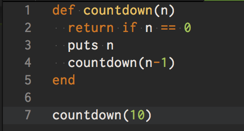
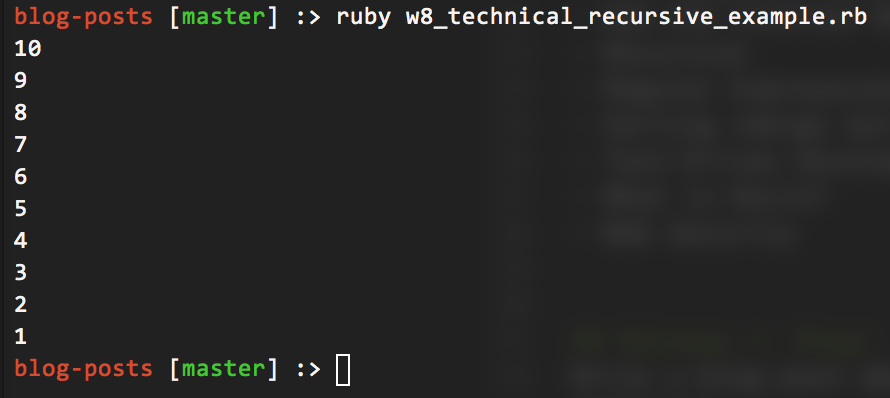

A recursive method is a method that calls itself from within its own method definition. Much like a loop, it needs to have a way to break out of itself, as well as some sort of incrementor to prevent infinite looping. The break is referred to as a “base case” and will return out of the method if evaluated to true.
An example to visualize recursion is to create a simple countdown script in Ruby. I’m going to define a method countdown that takes a parameter (n), representing the number of seconds to countdown from. The first thing to do is define the base case, so I will return out of the method if n == 0. Then I puts n and then tell the method to call itself, but to pass in the value of n-1.
There is nothing wrong with calling the method from within itself, because it will always test against the base case, and eventually return out of the method.
 